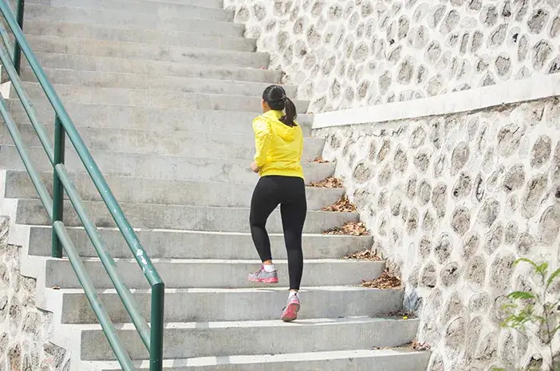
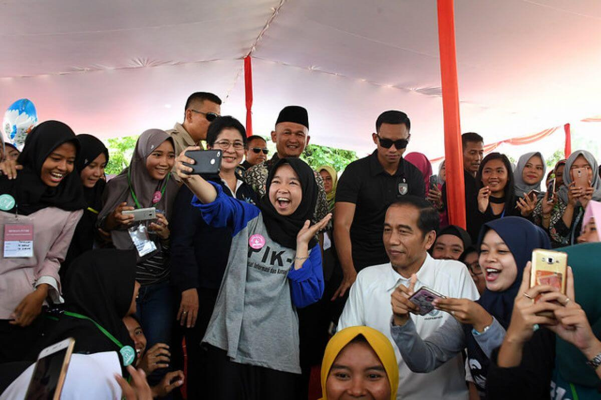

Beberapa Artikel
Tentang Stunting

halodoc.com
Ini 3 Cara Mencegah Stunting Sejak Remaja

halodoc.com
Ibu Harus Tahu, Ini Ciri-Ciri Stunting pada Anak

Stunting adalah masalah gizi kronis akibat kurangnya asupan gizi dalam jangka waktu panjang sehingga mengakibatkan terganggunya pertumbuhan pada anak. Stunting juga menjadi salah satu penyebab tinggi badan anak terhambat, sehingga lebih rendah dibandingkan anak-anak seusianya. Tidak jarang masyarakat menganggap kondisi tubuh pendek merupakan faktor genetika dan tidak ada kaitannya dengan masalah kesehatan. Faktanya, faktor genetika memiliki pengaruh kecil terhadap kondisi kesehatan seseorang dibandingkan dengan faktor lingkungan dan pelayanan kesehatan. Biasanya, stunting mulai terjadi saat anak masih berada dalam kandungan dan terlihat saat mereka memasuki usia dua tahun
Stunting memiliki gejala - gejala yang bisa anda kenali, misalnya :
Bisa di lihat gambar di atas, ada dua orang anak yang seusia tetapi memiliki perbedaan pada tinggi badan karena kurangnya asupan gizi pada anak
Pihak Kementrian kesehatan menegaskan bahwa stunting merupakan ancaman utama terhadap kualitas masyarakat Indonesia. Bukan hanya mengganggu pertumbuhan fisik, anak-anak juga mengalami gangguan perkembangan otak yang akan memengaruhi kemampuan dan prestasi mereka. Selain itu, anak yang menderita stunting akan memiliki riwayat kesehatan buruk karena daya tahan tubuh yang juga buruk. Stunting juga bisa menurun ke generasi berikutnya bila tidak ditangani dengan serius.
Faktor - faktor yang menyebabkan stunting
Tanpa disadari, penyebab stunting pada dasarnya sudah bisa terjadi sejak anak berada di dalam kandungan. Sebab, sejak di dalam kandungan, anak bisa jadi mengalami masalah kurang gizi. Penyebabnya, adalah karena sang ibu tidak memiliki akses terhadap makanan sehat dan bergizi seperti makanan berprotein tinggi, sehingga menyebabkan buah hatinya turut kekurangan nutrisi.
Pola asuh yang kurang efektif juga menjadi salah satu penyebab stunting pada anak. Pola asuh di sini berkaitan dengan perilaku dan praktik pemberian makanan kepada anak.
Rendahnya akses terhadap makanan dengan nilai gizi tinggi serta menu makanan yang tidak seimbang dapat memengaruhi pertumbuhan anak dan meningkatkan risiko stunting. Hal ini dikarenakan ibu kurang mengerti tentang konsep gizi sebelum, saat, dan setelah melahirkan.
Setelah bayi lahir, sebaiknya ibu dan bayi menerima perawatan pasca melahirkan.
faktor ibu yang masa remaja dan kehamilannya kurang nutrisi serta masa laktasi yang kurang baik juga dapat memengaruhi pertumbuhan dan otak anak.
Sakit infeksi yang berulang pada anak disebabkan oleh sistem imunitas tubuh yang tidak bekerja secara maksimal.
Sanitasi yang buruk serta keterbatasan akses pada air bersih juga akan mempertinggi risiko stunting pada anak.
Bagaimana cara mencegah stunting?
beberapa tindakan preventif yang dapat dilakukan untuk mencegah stunting. Tindakan pencegahan ini sebaiknya dilakukan sebelum, saat, dan sesudah masa kehamilan.
Cara diatas bukan hanya diperuntukkan bagi ibu hamil saja, tetapi juga untuk para remaja, agar di kemudian hari bisa mencegah terjadinya stunting.
Dampak terjadinya stunting
Tingkat stunting sebagai dampak kurang gizi pada balita di Indonesia melampaui batas yang ditetapkan WHO. Kasus stunting banyak ditemukan di daerah dengan kemiskinan tinggi dan tingkat pendidikan yang rendah selain itu stunting juga berpotensi memperlambat perkembangan otak, dengan dampak jangka panjang berupa keterbelakangan mental, rendahnya kemampuan belajar, dan risiko serangan penyakit kronis seperti diabetes, hipertensi, hingga obesitas.
Kalimantan timur adalah provinsi dengan jumlah penduduk sebanyak 3.941.766 jiwa berdasarkan data BPS tahun 2022 .Akan tetapi besarnya penduduk provinsi ini memiliki jumlah tingkat penduduk stunting yang sangat tinggi. Menurut Kementrian Kesehatan Stunting merupakan kondisi di mana seseorang memiliki tinggi badan jauh lebih pendek daripada yang seharusnya sesuai usianya, dengan perbedaan lebih dari -2 standar deviasi (SD) dari kurva pertumbuhan WHO. Kondisi ini terjadi karena faktor-faktor seperti asupan nutrisi yang tidak mencukupi dan/atau infeksi berulang atau kronis, sehinggga mengakibatkan dampak yang sulit diubah pada pertumbuhan dan terjadi pada 1000 hari pertama kehidupan.
Kutai Kartanegara merupakan salah satu kabupaten yang terdapat di Kalimantan Timur yang memiliki angka stunting yang tergolong tinggi. Menurut Cindy Mutia Annur (2023) menyatakan bahwa kutai kartanegara menduduki peringkat pertama dengan angka stunting tertinggi di provinsi Kalimantan timur dengan rata rata 27,1%. Besarnya angka tersebut tentunya dapat menjadi pengingat bahwa Kabupaten Kutai Kartanegara harus dapat segera berbenah dalam menanggulangi permasalah Stunting.